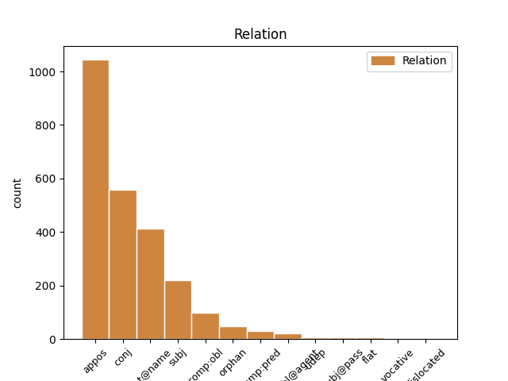
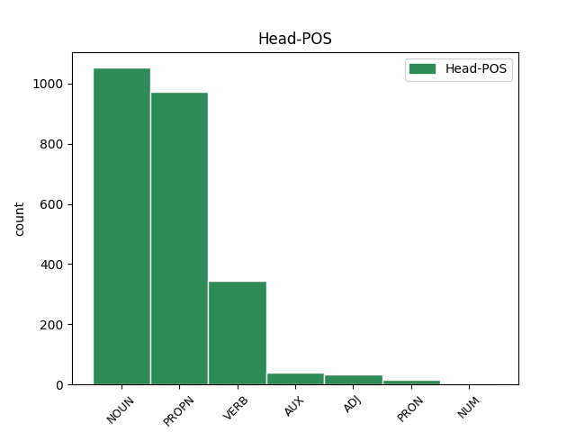
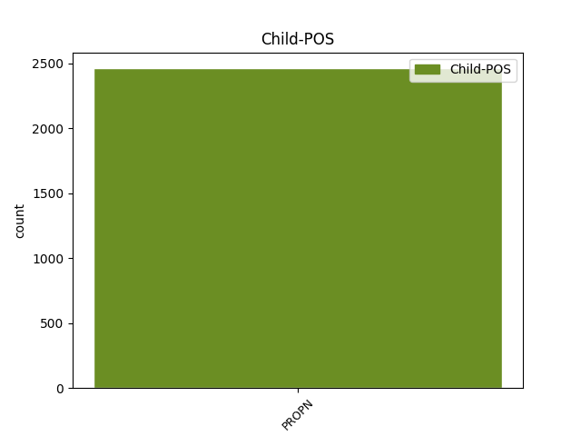

Distribution of features within this leaf



Agreement Rules sorted by frequency.
- When the dependent token is the appositional modifier(appos) of the head token, and the dependent token is PROPN.
1 Слава _ _ _ _ 0 _ _ _
2 Игорю _ _ _ _ 0 _ _ _
3 Святъславличю _ _ _ _ 0 _ _ _
4 буй _ _ _ _ 0 _ _ _
5 туру туръ NOUN Nb Case=Dat|Gender=Masc|Number=Sing 0 _ _ _
6 Всеволоду вьсеволодъ PROPN Ne Case=Dat|Gender=Masc|Number=Sing 5 appos _ ref=216
7 Владиміру _ _ _ _ 0 _ _ _
8 Игоревичу _ _ _ _ 0 _ _ _
1 Слава _ _ _ _ 0 _ _ _
2 Игорю _ _ _ _ 0 _ _ _
3 Святъславличю _ _ _ _ 0 _ _ _
4 буй _ _ _ _ 0 _ _ _
5 туру туръ NOUN Nb Case=Dat|Gender=Masc|Number=Sing 0 _ _ _
6 Всеволоду _ _ _ _ 0 _ _ _
7 Владиміру владимиръ PROPN Ne Case=Dat|Gender=Masc|Number=Sing 5 conj _ ref=216
8 Игоревичу _ _ _ _ 0 _ _ _
1 Слава _ _ _ _ 0 _ _ _
2 Игорю _ _ _ _ 0 _ _ _
3 Святъславличю _ _ _ _ 0 _ _ _
4 буй _ _ _ _ 0 _ _ _
5 туру _ _ _ _ 0 _ _ _
6 Всеволоду _ _ _ _ 0 _ _ _
7 Владиміру владимиръ PROPN Ne Case=Dat|Gender=Masc|Number=Sing 0 _ _ _
8 Игоревичу игоревичь PROPN Ne Case=Dat|Gender=Masc|Number=Sing 7 flat@name _ ref=216
1 Рекъ рещи VERB V- Case=Nom|Gender=Masc|Number=Sing|Strength=Strong|Tense=Past|VerbForm=Part|Voice=Act 0 _ _ _
2 Боянъ боянъ PROPN Ne Case=Nom|Gender=Masc|Number=Sing 1 subj _ ref=209
3 и _ _ _ _ 0 _ _ _
4 ходы _ _ _ _ 0 _ _ _
5 на _ _ _ _ 0 _ _ _
6 Святъславля _ _ _ _ 0 _ _ _
7 пѣстворца _ _ _ _ 0 _ _ _
8 стараго _ _ _ _ 0 _ _ _
9 времени _ _ _ _ 0 _ _ _
10 Ярославля _ _ _ _ 0 _ _ _
11 Ольгова _ _ _ _ 0 _ _ _
12 коганя _ _ _ _ 0 _ _ _
13 хоти _ _ _ _ 0 _ _ _
1 Чрьленъ _ _ _ _ 0 _ _ _
2 стягъ стягъ NOUN Nb Case=Nom|Gender=Masc|Number=Sing 0 _ _ _
3 бѣла _ _ _ _ 0 _ _ _
4 хорюговь _ _ _ _ 0 _ _ _
5 чрьлена _ _ _ _ 0 _ _ _
6 чолка _ _ _ _ 0 _ _ _
7 сребрено _ _ _ _ 0 _ _ _
8 стружіе _ _ _ _ 0 _ _ _
9 храброму _ _ _ _ 0 _ _ _
10 Святьславличу святославичь PROPN Ne Case=Dat|Gender=Masc|Number=Sing 2 comp:obl _ ref=39
1 То _ _ _ _ 0 _ _ _
2 понѣ _ _ _ _ 0 _ _ _
3 узьрю _ _ _ _ 0 _ _ _
4 ли _ _ _ _ 0 _ _ _
5 си _ _ _ _ 0 _ _ _
6 лице _ _ _ _ 0 _ _ _
7 братьца _ _ _ _ 0 _ _ _
8 моѥго _ _ _ _ 0 _ _ _
9 мьньшааго _ _ _ _ 0 _ _ _
10 Глѣба _ _ _ _ 0 _ _ _
11 ꙗко _ _ _ _ 0 _ _ _
12 же _ _ _ _ 0 _ _ _
13 Иѡсифъ иосифъ PROPN Ne Case=Nom|Gender=Masc|Number=Sing 0 _ _ _
14 Вениꙗмина венияминъ PROPN Ne Case=Gen|Gender=Masc|Number=Sing 13 orphan _ ref=true
1 тъгда _ _ _ _ 0 _ _ _
2 же _ _ _ _ 0 _ _ _
3 хо҃любивыи _ _ _ _ 0 _ _ _
4 кнꙗзь _ _ _ _ 0 _ _ _
5 ѿ _ _ _ _ 0 _ _ _
6 манастырꙗ _ _ _ _ 0 _ _ _
7 великааго _ _ _ _ 0 _ _ _
8 оц҃а _ _ _ _ 0 _ _ _
9 нашего _ _ _ _ 0 _ _ _
10 ѳеодосиꙗ _ _ _ _ 0 _ _ _
11 избьравъ _ _ _ _ 0 _ _ _
12 ѥдиного _ _ _ _ 0 _ _ _
13 отъ _ _ _ _ 0 _ _ _
14 братиꙗ _ _ _ _ 0 _ _ _
15 иже _ _ _ _ 0 _ _ _
16 въ _ _ _ _ 0 _ _ _
17 чьрньчьскѣмь _ _ _ _ 0 _ _ _
18 житии _ _ _ _ 0 _ _ _
19 просиꙗвъша _ _ _ _ 0 _ _ _
20 исаию исаия PROPN Ne Case=Acc|Gender=Masc|Number=Sing 21 comp:pred _ ref=23
21 наричемааго нарещи VERB V- Case=Gen|Gender=Masc|Number=Sing|Strength=Weak|Tense=Pres|VerbForm=Part|Voice=Pass 0 _ _ _
22 того _ _ _ _ 0 _ _ _
23 же _ _ _ _ 0 _ _ _
24 изведъ _ _ _ _ 0 _ _ _
25 игѹмена _ _ _ _ 0 _ _ _
26 постави _ _ _ _ 0 _ _ _
27 въ _ _ _ _ 0 _ _ _
28 манастыри _ _ _ _ 0 _ _ _
29 своѥмь _ _ _ _ 0 _ _ _
30 ѹ _ _ _ _ 0 _ _ _
31 ст҃ааго _ _ _ _ 0 _ _ _
32 мч҃нка _ _ _ _ 0 _ _ _
33 димитриꙗ _ _ _ _ 0 _ _ _
34 иже _ _ _ _ 0 _ _ _
35 и _ _ _ _ 0 _ _ _
36 послѣже _ _ _ _ 0 _ _ _
37 добрыхъ _ _ _ _ 0 _ _ _
38 ради _ _ _ _ 0 _ _ _
39 нравъ _ _ _ _ 0 _ _ _
40 ѥго _ _ _ _ 0 _ _ _
41 поставленъ _ _ _ _ 0 _ _ _
42 бысть _ _ _ _ 0 _ _ _
43 епискѹпъмь _ _ _ _ 0 _ _ _
44 ростовѹ _ _ _ _ 0 _ _ _
45 городѹ _ _ _ _ 0 _ _ _
1 и _ _ _ _ 0 _ _ _
2 бѣ _ _ _ _ 0 _ _ _
3 любимъ любити VERB V- Case=Nom|Gender=Masc|Number=Sing|Strength=Strong|Tense=Pres|VerbForm=Part|Voice=Pass 0 _ _ _
4 Борисъмь борисъ PROPN Ne Case=Ins|Gender=Masc|Number=Sing 3 comp:obl@agent _ ref=true
5 паче _ _ _ _ 0 _ _ _
6 мѣры _ _ _ _ 0 _ _ _
1 тоже _ _ _ _ 0 _ _ _
2 тако _ _ _ _ 0 _ _ _
3 повелѣвъшȣ повелѣти VERB V- Case=Dat|Gender=Masc|Number=Sing|Strength=Strong|Tense=Past|VerbForm=Part|Voice=Pass 0 _ _ _
4 никонѹ никонъ PROPN Ne Case=Dat|Gender=Masc|Number=Sing 3 subj@pass _ ref=40
5 по _ _ _ _ 0 _ _ _
6 обычаю _ _ _ _ 0 _ _ _
7 творити _ _ _ _ 0 _ _ _
8 келарю _ _ _ _ 0 _ _ _
9 ѡнъ _ _ _ _ 0 _ _ _
10 же _ _ _ _ 0 _ _ _
11 прѣслѹшанию _ _ _ _ 0 _ _ _
12 творѧ _ _ _ _ 0 _ _ _
13 сълъга _ _ _ _ 0 _ _ _
14 рекыи _ _ _ _ 0 _ _ _
15 ꙗко _ _ _ _ 0 _ _ _
1 Рекъ _ _ _ _ 0 _ _ _
2 Боянъ _ _ _ _ 0 _ _ _
3 и _ _ _ _ 0 _ _ _
4 ходы ходына PROPN Ne Case=Nom|Gender=Masc|Number=Sing 0 _ _ _
5 на на PROPN Ne Case=Nom|Gender=Masc|Number=Sing 4 flat _ ref=209
6 Святъславля _ _ _ _ 0 _ _ _
7 пѣстворца _ _ _ _ 0 _ _ _
8 стараго _ _ _ _ 0 _ _ _
9 времени _ _ _ _ 0 _ _ _
10 Ярославля _ _ _ _ 0 _ _ _
11 Ольгова _ _ _ _ 0 _ _ _
12 коганя _ _ _ _ 0 _ _ _
13 хоти _ _ _ _ 0 _ _ _
1 оже _ _ _ _ 0 _ _ _
2 то _ _ _ _ 0 _ _ _
3 ѥси _ _ _ _ 0 _ _ _
4 казале _ _ _ _ 0 _ _ _
5 несъдѣ _ _ _ _ 0 _ _ _
6 вѣверичь _ _ _ _ 0 _ _ _
7 тихъ _ _ _ _ 0 _ _ _
8 дѣлѧ _ _ _ _ 0 _ _ _
9 коли _ _ _ _ 0 _ _ _
10 то _ _ _ _ 0 _ _ _
11 еси _ _ _ _ 0 _ _ _
12 приходиле _ _ _ _ 0 _ _ _
13 въ _ _ _ _ 0 _ _ _
14 рѹсь _ _ _ _ 0 _ _ _
15 съ _ _ _ _ 0 _ _ _
16 лазъ[в]къмъ _ _ _ _ 0 _ _ _
17 тъгъдъ _ _ _ _ 0 _ _ _
18 възѧле възяти VERB V- Aspect=Res|Case=Nom|Gender=Masc|Number=Sing|Strength=Strong|VerbForm=Part|Voice=Act 0 _ _ _
19 ѹ _ _ _ _ 0 _ _ _
20 мене _ _ _ _ 0 _ _ _
21 лазъвке _ _ _ _ 0 _ _ _
22 переѧславьлѣ переяславль PROPN Ne Case=Loc|Gender=Masc|Number=Sing 18 udep _ ref=true
1 тъгда _ _ _ _ 0 _ _ _
2 же _ _ _ _ 0 _ _ _
3 хо҃любивыи _ _ _ _ 0 _ _ _
4 кнꙗзь _ _ _ _ 0 _ _ _
5 ѿ _ _ _ _ 0 _ _ _
6 манастырꙗ _ _ _ _ 0 _ _ _
7 великааго _ _ _ _ 0 _ _ _
8 оц҃а _ _ _ _ 0 _ _ _
9 нашего _ _ _ _ 0 _ _ _
10 ѳеодосиꙗ _ _ _ _ 0 _ _ _
11 избьравъ _ _ _ _ 0 _ _ _
12 ѥдиного _ _ _ _ 0 _ _ _
13 отъ _ _ _ _ 0 _ _ _
14 братиꙗ _ _ _ _ 0 _ _ _
15 иже _ _ _ _ 0 _ _ _
16 въ _ _ _ _ 0 _ _ _
17 чьрньчьскѣмь _ _ _ _ 0 _ _ _
18 житии _ _ _ _ 0 _ _ _
19 просиꙗвъша _ _ _ _ 0 _ _ _
20 исаию _ _ _ _ 0 _ _ _
21 наричемааго _ _ _ _ 0 _ _ _
22 того _ _ _ _ 0 _ _ _
23 же _ _ _ _ 0 _ _ _
24 изведъ _ _ _ _ 0 _ _ _
25 игѹмена _ _ _ _ 0 _ _ _
26 постави _ _ _ _ 0 _ _ _
27 въ _ _ _ _ 0 _ _ _
28 манастыри _ _ _ _ 0 _ _ _
29 своѥмь _ _ _ _ 0 _ _ _
30 ѹ _ _ _ _ 0 _ _ _
31 ст҃ааго _ _ _ _ 0 _ _ _
32 мч҃нка _ _ _ _ 0 _ _ _
33 димитриꙗ _ _ _ _ 0 _ _ _
34 иже _ _ _ _ 0 _ _ _
35 и _ _ _ _ 0 _ _ _
36 послѣже _ _ _ _ 0 _ _ _
37 добрыхъ _ _ _ _ 0 _ _ _
38 ради _ _ _ _ 0 _ _ _
39 нравъ _ _ _ _ 0 _ _ _
40 ѥго _ _ _ _ 0 _ _ _
41 поставленъ _ _ _ _ 0 _ _ _
42 бысть _ _ _ _ 0 _ _ _
43 епискѹпъмь епископъ NOUN Nb Case=Ins|Gender=Masc|Number=Sing 0 _ _ _
44 ростовѹ ростовъ PROPN Ne Case=Dat|Gender=Masc|Number=Sing 43 dislocated _ ref=23
45 городѹ _ _ _ _ 0 _ _ _
1 Одинъ _ _ _ _ 0 _ _ _
2 братъ братъ NOUN Nb Case=Nom|Gender=Masc|Number=Sing 0 _ _ _
3 одинъ _ _ _ _ 0 _ _ _
4 свѣтъ _ _ _ _ 0 _ _ _
5 свѣтлый _ _ _ _ 0 _ _ _
6 ты _ _ _ _ 0 _ _ _
7 Игорю игорь PROPN Ne Case=Voc|Gender=Masc|Number=Sing 2 vocative _ ref=20
Disagree Examples:
1 и _ _ _ _ 0 _ _ _
2 казань _ _ _ _ 0 _ _ _
3 есмѧ _ _ _ _ 0 _ _ _
4 и _ _ _ _ 0 _ _ _
5 ѡрдѹ орда NOUN Nb Case=Acc|Gender=Fem|Number=Sing 0 _ _ _
6 и _ _ _ _ 0 _ _ _
7 ѹсланъ усланъ PROPN Ne Case=Acc|Gender=Masc|Number=Sing 5 conj _ ref=2
8 и _ _ _ _ 0 _ _ _
9 сараи _ _ _ _ 0 _ _ _
10 и _ _ _ _ 0 _ _ _
11 берекезаны _ _ _ _ 0 _ _ _
12 проехали _ _ _ _ 0 _ _ _
13 есмѧ _ _ _ _ 0 _ _ _
14 доброволно _ _ _ _ 0 _ _ _
1 а _ _ _ _ 0 _ _ _
2 кам꙽баѧтъ камбатъ PROPN Ne Case=Nom|Gender=Masc|Number=Sing 4 subj _ ref=16
3 же _ _ _ _ 0 _ _ _
4 пристанище пристанище NOUN Nb Case=Nom|Gender=Neut|Number=Sing 0 _ _ _
5 индѣискомѹ _ _ _ _ 0 _ _ _
6 морю _ _ _ _ 0 _ _ _
7 всемꙋ _ _ _ _ 0 _ _ _
1 симъ сии ADJ Pd Case=Dat|Gender=Masc|Number=Plur 0 _ _ _
2 бо _ _ _ _ 0 _ _ _
3 первое _ _ _ _ 0 _ _ _
4 преложены _ _ _ _ 0 _ _ _
5 книги _ _ _ _ 0 _ _ _
6 маравѣ морава PROPN Ne Case=Dat|Gender=Fem|Number=Sing 1 appos _ ref=26.2
7 яже _ _ _ _ 0 _ _ _
8 презва _ _ _ _ 0 _ _ _
9 сѧ _ _ _ _ 0 _ _ _
10 грамота _ _ _ _ 0 _ _ _
11 словѣньская _ _ _ _ 0 _ _ _
12 яже _ _ _ _ 0 _ _ _
13 грамота _ _ _ _ 0 _ _ _
14 есть _ _ _ _ 0 _ _ _
15 в _ _ _ _ 0 _ _ _
16 руси _ _ _ _ 0 _ _ _
17 и _ _ _ _ 0 _ _ _
18 в _ _ _ _ 0 _ _ _
19 болгарѣх _ _ _ _ 0 _ _ _
20 дунаискихъ _ _ _ _ 0 _ _ _
1 идаша _ _ _ _ 0 _ _ _
2 за _ _ _ _ 0 _ _ _
3 море _ _ _ _ 0 _ _ _
4 къ _ _ _ _ 0 _ _ _
5 варѧгомъ варягъ NOUN Nb Case=Dat|Gender=Masc|Number=Plur 0 _ _ _
6 к _ _ _ _ 0 _ _ _
7 русі русь PROPN Ne Case=Dat|Gender=Fem|Number=Sing 5 appos _ ref=19.21
1 и _ _ _ _ 0 _ _ _
2 раздая _ _ _ _ 0 _ _ _
3 мужемъ _ _ _ _ 0 _ _ _
4 своимъ _ _ _ _ 0 _ _ _
5 грады _ _ _ _ 0 _ _ _
6 ѡвому _ _ _ _ 0 _ _ _
7 полотескъ полотьскъ PROPN Ne Case=Acc|Gender=Masc|Number=Sing 0 _ _ _
8 ѡвому _ _ _ _ 0 _ _ _
9 ростовъ _ _ _ _ 0 _ _ _
10 другому _ _ _ _ 0 _ _ _
11 бѣлоѡзеро бѣлоозеро PROPN Ne Case=Acc|Gender=Neut|Number=Sing 7 orphan _ ref=20.14